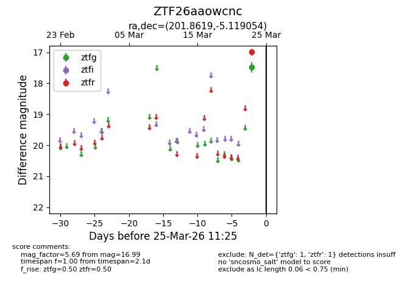
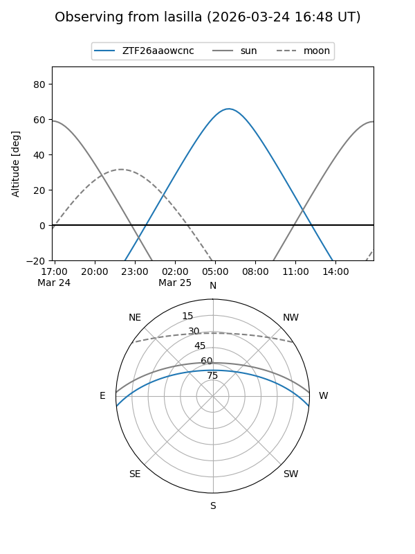
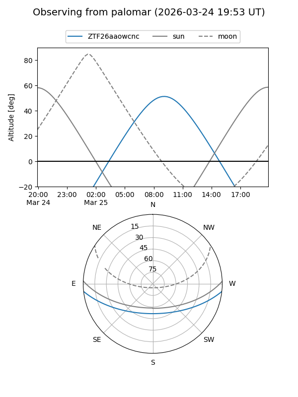

ZTF26aaowcnc
Target ZTF26aaowcnc at 2026-03-25 11:28
Aliases and brokers:
FINK: link
Lasair: link
ALeRCE: link
alt names
ZTF26aaowcnc (ztf,fink_ztf)
Coordinates:
equatorial (ra, dec) = 201.8619,-5.11905
equatorial (HMS+DMS) = 13:27:26.84,-05:07:08.60
galactic (l, b) = (319.3777,+56.59852)
Flags:
Photometry:
last ztfg=17.49, ztfr=16.99
1 ztfg, 1 ztfr detections
Lightcurve

Visibility


Additional plots